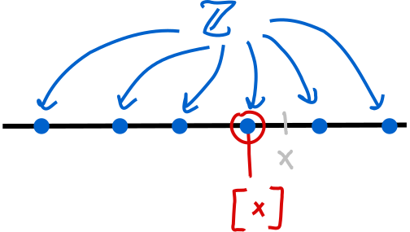
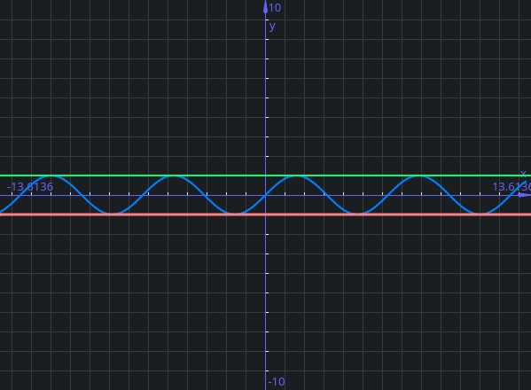
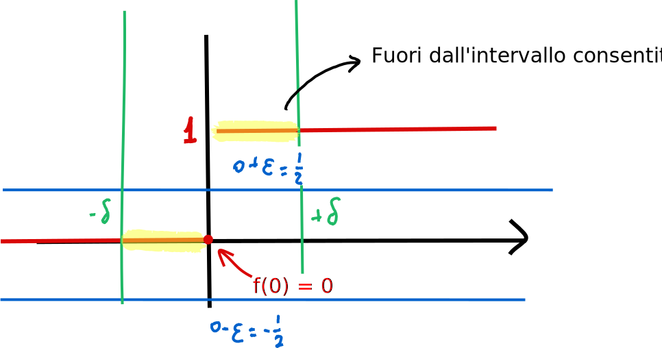
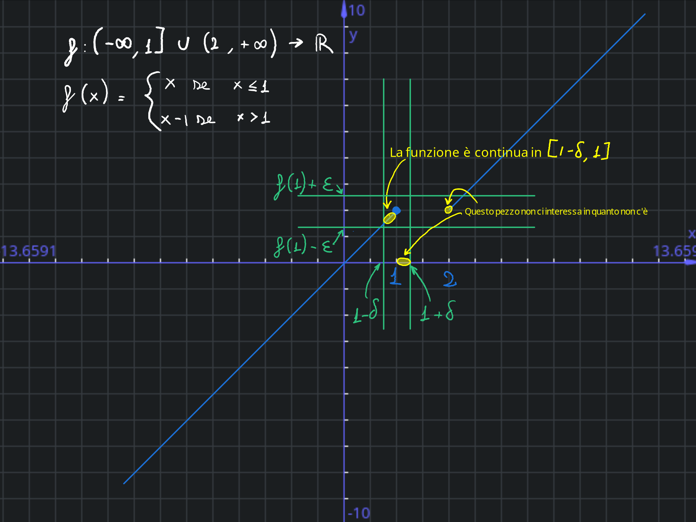
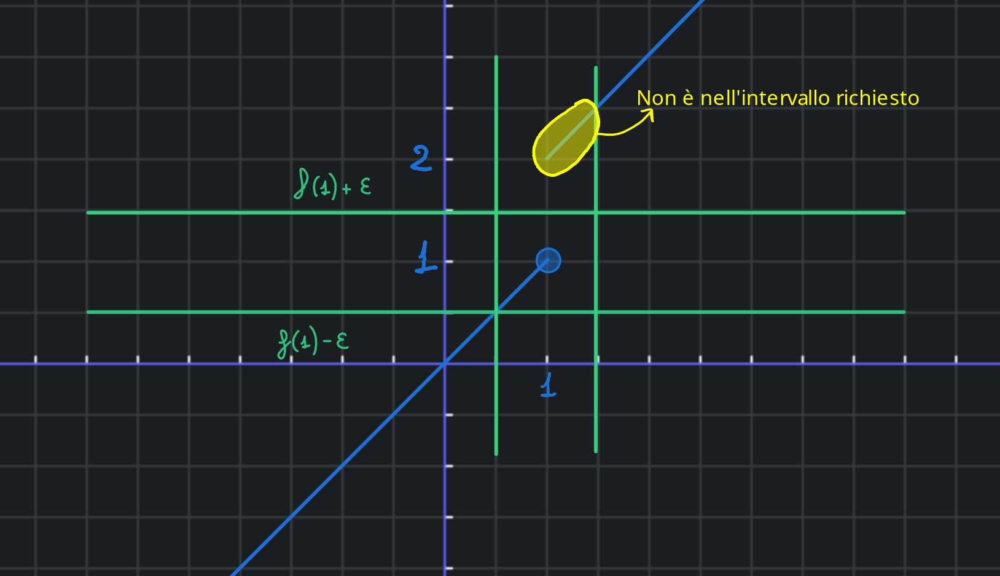
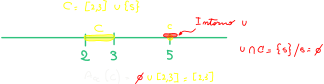
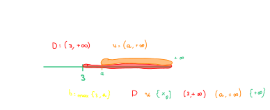
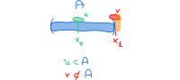

Calcolo differenziale
Massimo, maggiorante ed insieme limitato¶
Massimo di un insieme¶
Massimo dell'insieme
\(A \in \mathbb R, A \ne 0, m \in \mathbb R \text{ si dice massimo di A se } m \ge a \quad \forall a \in A \text{ e } m \in A\)
Dato un subset A di R non vuoto, un numero m reale si dice massimo dell'insieme A se m >= di a e m è in A
Quindi ad esempio se A è l'intervallo \(A = [0,1] \Rightarrow max(A) =1\)
Tuttavia non tutti gli insiemi hanno un massimo:
\(B = [0,1)\) allora B non ha massimo
La dimostrazione è abbastanza semplice quando fatta per assurdo:
Dimostrazione
Preso come esempio l'intervallo B appena citato, possiamo prendere un numero nell'insieme B e chiamarlo m (ad esempio 0.9). Troviamo quindi un \(\epsilon=1-m > 0\) (in questo caso \(\epsilon = 0.1\))
A questo punto possiamo definire \(m_1 = m + \frac \epsilon 2\).
Avremo quindi che \(m < m_1\), con \(m_1 \in B\) e quindi \(m_1\) dovrebbe essere il massimo.
Quindi B non ha massimo.
Maggiorante¶
Maggiorante
Dato \(A \subset \mathbb R, A \ne \varnothing\) un numero \(k \in \mathbb R\) si dice maggiorante di A se \(k \ge a \forall a \in A\).
L'insieme di tutti i maggioranti si indica con \(\mathcal M_A\)
Un maggiorante deve essere quindi più grande di tutti gli elementi di A e non è detto che appartenga ad A.
Quindi, riprendendo l'esempio precedente \(A=[0,1]\), \(3 \in \mathcal M_A\), mentre \(\frac 1 4\) non è un maggiorante
Possiamo quindi fare un paio di osservazioni:
- Se esiste un maggiorante di A allora ne esistono infiniti: se k è un maggiorante di A allora m è un maggiorante di A \(\forall m \ge k\)
- Alcuni insiemi non hanno maggioranti: \(A = \mathbb R\) non ha maggioranti, così come la semiretta \([4, +\infty)\)
Insieme superiormente limitato¶
Insieme limitato superiormente
Se l'insieme dei maggioranti è non vuoto \(\mathcal M_A \ne \varnothing\), l'insieme A si dice limitato superiormente
Minimo, minorante ed insieme limitato inferiormente¶
Minimo, minorante ed insieme inferiormente limitato
Le stesse definizioni ma opposte si applicano per minimo, minorante e insieme inferiormente limitato
Minimo dell'insieme
\(A \in \mathbb R, A \ne 0, m \in \mathbb R \text{ si dice minimo di A se } m \le a \quad \forall a \in A \text{ e } m \in A\)
Minorante
Dato \(A \subset \mathbb R, A \ne \varnothing\) un numero \(k \in \mathbb R\) si dice minorante di A se \(k \le a \forall a \in A\).
Insieme limitato inferiormente
Se l'insieme dei minoranti è non vuoto \(m_A \ne \varnothing\), l'insieme A si dice limitato inferiormente
Insieme limitato¶
Insieme limitato
Dato un insieme \(A \subset \mathbb R, a \ne \varnothing\) se A è sia superiormente che inferiormente limitato, allora A si dice limitato
Un insieme A è quindi limitato se e solo se \(\exists h,k \in \mathbb R\) tale che \(k \le a \le h \quad \forall a \in A\)
Quindi i due valori sono estermi all'insieme, limitandolo.
L'estremo di una funzione¶
Teorema dell'estremo superiore
Dato un sotto insieme di R \(A \subset \mathbb R, A \ne \varnothing\), superiormente limitato, allora esiste il minimo dell'insieme dei maggioranti. Tale minimo si dice estremo superiore di A e si indica con \(sup(A)\)
L'estremo superiore è quindi il minimo dei maggioranti, ed ogni insieme limitato superioremente ha un estremo superiroe.
Possiamo quindi vedere che l'insieme dei maggioranti ha sempre minimo
Quindi, ad esempio:
- \(A = [0,1) \Rightarrow \mathcal M_A = [1,+\infty)\). Il minimo dell'insieme dei maggioranti è 1, quindi l'estremo superiore di A è 1.
- \(B = [0,1] \Rightarrow \mathcal M_B = [1,+\infty)\). Il minimo dell'insieme dei maggioranti è 1, quindi l'estremo superiore di B è 1.
Il massimo di un insieme è il suo limite superiore
Se esiste il massimo di un insime A, allora il massimo di A coincide con l'estremo superiore.
un insieme limitato superiormente ha sempre un estremo superiore. Se questo elemento appartiene anche all'insieme è anche un massimo:
\(\exists \; max(A) \rightarrow max(A) = sup(A)\) (Se esiste \(max(A)\) allora \(max(A)=sup(A)\))
Insieme non limitato superiormente
Se l'insieme A non è superiormente limitato, scriviamo \(sup(A) = + \infty\)
Verificare che un oggetto è un estremo superiore
\(A \ne \varnothing\) superioremente limitato.
Allora \(m = sup(A)\) se e solo se valgono:
- \(a \le m \; \forall a \in A\) (che significa che m è un maggiorante)
- \(\forall \epsilon > 0 \; \exists \; \bar a \in A\) tale che \(\bar a > m - \epsilon\) (spostarsi a sinistra di m c'è un elemento a destra di m \epsilon, non ci sono maggioranti più piccoli di m; m è il più piccolo dei maggioranti)
Un insieme superiormente limitato è minore di infinito
La scrittura \(sup(A) < + \infty\) singifica che l'estremo superore di A è un numero reale, quindi A è superiormente limitato.
La retta reale estesa¶
Retta reale estesa
\(\bar{ \; \mathbb{R} \; } = \mathbb{R} \cup \{-\infty\} \cup \{+\infty\}\)
in modo che valga \(-\infty \le m \le + \infty \quad \forall x \in \bar{\;\mathbb R\;}\)
Ergo, se \(x \in \mathbb R\) (quindi \(x \ne +\infty, x \ne -\infty\)), allora \(-\infty < x < + \infty\)
Operazionu sulla retta reale estesa¶
Operazioni in \(\bar {\mathbb R}\)
- Se \(x \ne +\infty\), allora \(x + (- \infty) = - \infty\)
- Se \(x \ne -\infty\), allora \(x + (+ \infty) = + \infty\)
- Se \(x \gt 0\) allora \(x \cdot (+ \infty) = + \infty\) e \(x \cdot (- \infty) = - \infty\)
- Se \(x \lt 0\) allora \(x \cdot (+ \infty) = - \infty\) e \(x \cdot (- \infty) = + \infty\)
Operazioni vietate (forme indeterminate)
- \((+ \infty) + (- \infty)\)
- \(0 \cdot (+ \infty)\)
- \(0 \cdot (- \infty)\)
Operazioni valide
- \(+ \infty \cdot + \infty = + \infty\)
- \(+ \infty \cdot - \infty = - \infty\)
- \(- \infty \cdot - \infty = + \infty\)
Minimi e massimi di insiemi limitati¶
Insiemi limitati hanno minimi o massimi
Dato \(A \subset \mathbb Z\) (interi) se A è superiormente limitato, A ha massimo.
Se A è inferiormente limitato, allora A ha minimo
Parte intera
Dato \(x \in \mathbb R\) si dice parte intera di x e si indica con \([x]\) il numero \([x] = max \{ m \in \mathbb Z : m \le x \}\).

Ovvero: se abbiamo x (reale) tra due interi, la parte intera di x è il primo intero che si ottiene spostandosi a sinistra. Ad esempio:
- \([\frac {25}{10}] = 2\)
- \([-\frac {25}{10}] = -3\)
Funzioni limitate¶
Funzione limitata
f si dice limitata:
- superiormente se f(a) (la sua immagine) è limitato superiormente
- inferiormente se f(a) (la sua immagine) è limitato inferiormente
- se \(f(a)\) (la sua immagine) è limitato
Massimo e minimo di una funzione¶
Funzione con massimo
\(f\) ha massimo se \(f(A)\) (la sua immagine) ha massimo.
Si dice che \(M\) è il massimo di \(f\) e si scrive
\(M = max(f)\) se \(M = max(A)\)
Funzione con minimo
\(f\) ha minimo se \(f(A)\) (la sua immagine) ha minimo.
Si dice che m è il minimo di \(f\) e si scrive
\(m = min(f)\) se \(m = min(A)\)
Limiti di una funzione¶
Limiti di una funzione
\(sup(f) = sup(f(A))\)
Se \(f\) non è limitata superiormente si scrive \(sup(f) = + \infty\).
Lo stesso vale per inf (limite inferiore).
Punti di massimo di una funzione¶
Punti di massimo
Se \(f\) ha massimo allora i punti \(\forall x_0 \in A | f(x_0) = max(f)\) si dicono punti di massimo.
Se \(f\) ha minimo allora i punti \(\forall x_0 \in A | f(x_0) = min(f)\) si dicono punti di minimo.
Massimo e punti di massimo
Il massimo di \(f\) è unico; i punti di massimo potrebbero essere molti.
Lo stesso vale per il minimo.

Nella funzione seno, il massimo è \(max(f) = 1\) e 0 i punti di massimo sono \(x_0 = \frac \pi 2 + k\cdot 2 \pi, k \in \mathbb Z\)
Una funzione come \(f:(0, +\infty) \rightarrow \mathbb R \quad f(x) = \frac 1 x\) non ha né massimo né minimo. La funzione ad infinito tende a 0:
Se avesse massimo \(\Rightarrow \exists M\) tale che \(f(x) \le M \forall x \in (0, + \infty)\):
\(f(x) > 0 \forall x \Rightarrow 0\) è un minorante \(0=inf(f)\) (inf = estremo inferiore)
0 è quindi l'estremo inferiore di f, ma 0 NON è un minimo.
Se la funzione avesse minimo, allora dovrebbe essere \(min(f)=inf(f)=0\), quindi dovrebbe esistere un \(x_0\) tale che \(f(x_0)=0\) cioè \(\frac 1 {x_0}\), che è impossibile.
\(f: A \rightarrow \mathbb R\) allora \(m = sup(f)\) se e solo se:
- \(f(x) \le m \forall x \in A\)
- \(\forall \epsilon > 0 \exists \bar x \in S\) tale che \(f(\bar x) > m - \epsilon\)
Se si abbassa la quota di m si "taglia" la funzione
Valore assoluto¶
Valore assoluto
Dato \(x \in \mathbb R\) si dice valore assoluto di x e si indica con |x| il numero \(|x| = max(x,-x)\)
Quindi:
- \(x \le |x|\)
- \(|x| = x\) se \(x \ge 0\), \(|x| = -x\) se \(x \le 0\)
- \(|x| \ge 0 \forall x \in \mathbb R\)
- \(|x| = 0 \Leftrightarrow x = 0\)
- \(|x| = |-x|\)
- \(-|x| \le x \le |x|\)
- \(|x| \le M \Leftrightarrow -M \le x \le M\) (\(M \gt 0\))
- \(|x| \gt M \Leftrightarrow x \gt M\) oppure \(x \lt -M\)
Come altre proprietà possiamo poi aggiungere:
- \(|x| \le x_0 \Leftrightarrow -x_0 \le m \le x_0\)
- \(|x| \ge x_0 \Leftrightarrow x \le -x_0\) oppure \(x \ge x_0\)
Disuguaglianza triangolare¶
Disuguaglianza triangolare
Dati \(a, b \in \mathbb R\) , risulta che:
- \(|a + b| \le |a| + |b|\)
- \(||a| - |b| | \le |a-b|\)
Questo discorso vale anche per più valori:
\(|a + b + c| \le |a + b + c|\)
\(|a + b + c| = |(a + b) + c| \le |a + b| + |c| \le |a| + |b| + |c|\)
La continuità¶
Funzione continua in un punto
\(A \subset \mathbb R, f: A \rightarrow \mathbb R, x_0 \in A\).
La funzione si dice continua in x_0 se \(\forall \epsilon > 0 \; \exists \; \delta > 0\)
tale che
\(x \in A, |x - x_0| < \delta \Rightarrow |f(x) - f(x_0)| < \epsilon\)
Spiegandola un po':
- \(|x - x_0| < \delta \Leftrightarrow x_0 - \delta < x < x_0 + \delta\) (\(x\) è compreso tra \(x_0 \pm \delta\) )
- \(|f(x) - f(x_0)| < \epsilon \Leftrightarrow f(x_0) - \epsilon < f(x) < f(x_0) + \epsilon\) (la funzione oscilla intorno ad \(f(x_0)\) ad un ampiezza massima di \(\epsilon\))
- Se esiste un \(\delta\) nell'\(epsilon\) dato, la funzione è continua
Una funzione è sempre continua nei punti isolati
La continuità include un concetto di prossimità del punto (al punto dove si considera la continuità): se il punto è isolato non è possibile avvicinarsi al punto, ci si può solo "trovare" nel punto.
Esempio di funzione non continua in un punto
Data la funzione
\(f(x) = \begin{cases} 0 \text{ se } x \le 0 \\ 1 \text{ se } x > =0 \end{cases}\)
Questa funzione non è continua nel punto \(x_0 = 0\) (in cui scegliamo \(\epsilon = \frac 1 2\)):

In questa funzione, \(\forall \delta > 0, x \in (0, \delta) \rightarrow f(x) =1\)
La disuguaglianza \(f(x) < f(0)+\epsilon\) è falsa:
\(0-\frac 1 2 < f(x) < 0 + \frac 1 2\):
\(1 < \frac 1 2 \Rightarrow f\) non è continua in \(x_0 = 0\)
Funzione continua in un insieme
Dati \(A \in \mathbb R, f: A \rightarrow \mathbb R, B \subset A\),
Si dice che la funzione \(f\) è continua in B se è continua in ogni punto \(x_0 \in B\).
Se si dice che f è continua (senza specificare il sottoinsieme B), significa che f è continua in tutti i punti del suo dominio A.
Esempio di funzione non continua in un insieme
Riprendendo la funzione di prima
\(f(x) = \begin{cases} 0 \text{ se } x \le 0 \\ 1 \text{ se } x > =0 \end{cases}\)
Questa funzione è continua in \((-\infty, 0) \cup (0, + \infty)\)
Teoremi sulla continuità¶
Teorema sulla permanenza del segno
\(A \subset \mathbb R, f:A \rightarrow \mathbb R, x_0 \in A\)
Se f è continua in \(x_0\) e \(f(x_0) > 0\) allora \(\exists \delta > 0\) tale che se \(x \in A\) e \(|x -x_0| < \delta Rightarrow f(x) > 0\).
Stesso risultato se \(f(x) < 0\)
Quindi, se una funzione continua assume valore di segno positivo in un punto, allora mantiene lo stesso segno nei punti molto vicini al punto.
Dimostrazione
Sappiamo che \(f(x_0) > 0\).
Scelgo \(\epsilon = \frac {f(x_0)} 2\) e lo uso nella definizione di continuità.
Esiste quindi un \(\delta >0\) tale che \(x \in A, |x - x_0| < \delta \Rightarrow |f(x) - f(x_0)|< \epsilon\)
Ovvero: \(f(x_0) - \epsilon < f(x) < f(x_0) + \epsilon\)
Prendendo la prima parte della disuguaglianza, si ottiene che \(f(x) > f(x_0) - \epsilon = f(x_0) - \frac {f(x_0)} 2 \Rightarrow \frac {f(x_0)} 2 > 0\)
Essendo il valore lontano da zero, se ci si sposta un po' vicino al punto; Il valore della fuzonone si sposta poco e quindi il segno rimane concorde.
Questo discorso vale anche per un valore \(m \in \mathbb R\) tale che \(f(x_0) > m\)
In tal caso \(\exists \delta > 0\) t.c. \(x \in A, |x - x_0| < \delta \Rightarrow f(x) > m\)
(Questo discorso vale anche con \(f(x) < m \Rightarrow f(x) < m\))
Teorema sulla combinazione di funzioni continue (somma e prodotto)
Se \(f\) e \(g\) sono continue in \(x_0\) allora lo sono anche le funzioni \(f+g\), \(f \cdot g\) e \(|f|\).
Se inoltre \(f(x_0) \neq 0\), allora anche \(\frac 1 f\) è continua.
\(\frac f g\) è continua (se \(g(x_0) \ne 0\) ).
\(\frac f g = f \cdot \frac 1 g\)
\(I \subset \mathbb R\) intervallo, \(f: I \rightarrow B \subset \mathbb R\).
Se \(f\) è continua in \(I\) ed è invertibile, allora \(f^{-1}\) è continua.
L'ipotesi che il dominios sia un'intervallo non può essere omessa.
Esempio
\(f:(-\infty, 1] \cup (2, +\infty) \rightarrow \mathbb R\)
\(f(x)=
\begin{cases}
x \quad \;\;\; \text{ se } x \le 1 \\
x-1 \text{ se } x > 1
\end{cases}\)
Alla domanda se la funzione è continua, la risposta è sì.

Tuttavia la sua inversa \(f^{-1}: \mathbb R \rightarrow (-\infty, 1] \cup (2, + \infty)\) non è continua in \(x_0\).
Non è continua perché c'è una specie di salto in \(x=1\):

Se f non è definita su un intervallo, potrebbe accadere che la sua funzione inversa non sia continua, anche se la funzione è continua.
Continuità delle funzioni elementari¶
- Le funzioni costanti sono continue
-
\(f(x) = x\) è continua. Da ciò segue che tutti i polinomi sono continui:
Un polinomio ( \(p(x) = a_n \cdot x^n + a_{n-1} \cdot x^{n-1} + ... + a_1 \cdot x + a_0\) ) ha i coefficienti come numeri reali (\(a_0, a_1, ..., a_n \in \mathbb R\)). Quindi dal teorema su somma e del prodotto so che la funzione è continua:
Una costante è una funzione continua.
Una costante (che è una funzione continua) per x è una funzione continua (perché x è una funzione continua) Un monomio è una funzione continua, in quanto \(x^2 = x \cdot x\), ovvero una funzione continua moltiplicata per una funzione continua - Le funzioni razionali sono continue nel loro insieme di definizione. Una funzione razionale è un quoziente di polinomi (\(f(x) = \frac {p(x)}{q(x)}\) dove p e q sono funzioni polinomiali)
Definita se \(q(x) \ne 0\)
- \(e^x\), \(sin(x)\) e \(cos(x)\) sono funzioni continue.
Quindi anche \(log(x)\), \(arcsin(x)\), \(arccos(x)\) saranno continue in quanto inverse.
Ma anch e \(tg(x)\) (perché è quoziente di seno e coseno) e anche \(arctg(x)\)
Continuità di composizione di funzioni
Date le funzioni \(f: A \rightarrow B\) e \(g: B \rightarrow \mathbb R\), con \(x_0 \in A, y_0=f(x_0) \in B\)
Se \(f\) è continua in \(x_0\) e \(g\) è continua in \(y_0\), allora \(g \circ f\) è continua in \(x_0\)
Esempio
\(e^{cos(x)}\) è una funzione continua in quanto composizione di \(f(x) = cos(x)\) e \(g(y) = e^y\)
Il massimo di un insieme è il suo limite superiore
Se si ha una funzione \(f: [a,b] \rightarrow \mathbb R\) continua in \([a,b]\),
L'estremo superiore è uguale se l'intevallo è aperto o chiuso: \({\sup _{x \in (a,b)}} f(x) = \sup _{x \in [a,b]} f(x)\)
Vale poi lo stesso per l'estremo inferiore:
\({\inf _{x \in (a,b)}} f(x) = \inf _{x \in [a,b]} f(x)\)
Teorema degli zeri¶
Teorema degli zeri
Data la funzione \(f: [a,b] \rightarrow \mathbb R\) continua
Se \(f(a) \cdot f(b) < 0\) allora \(\exists \; c \in (a,b)\) tale che \(f(c) =0\)
Fondamentalmente se la moltiplicazione tra i valori che la funzione assume agli estremi dell'intervallo è minore di zero (quindi moltiplichiamo un positivo con un negativo), esiste almeno un punto \(c\) nell'intervallo \((a,b)\) tale \(f(c) = 0\).
L'ipotesi di continuità è necessaria
Teorema dei valori intermedi¶
Teorema dei valori intermedi
\(I \subset \mathbb R\) intervallo, \(f: I \rightarrow \mathbb R\) continua.
Allora \(f(I)\) (l'immagine di f) è un intervallo.
In questo caso, se f assume i valori y_1 e y_2, allora assume anche tutti i valori compresi tra y_1 e y_2. Notare che I deve obbligatoriamente essere un intervallo.
Teorema di Weierstrass¶
Teorema di Weierstrass
Definita \(f: [a,b] \rightarrow \mathbb R\) continua, allora f ha massimo e minimo.
Quindi dati \(a,b \in \mathbb R\) (quindi \(a,b \ne \pm \infty\)).
L'intervallo [a,b] è un intervallo definito limitato (gli estremi non sono più e meno infinito) e chiuso (ha entrambi gli estremi).
Perché \([a,b]\) deve essere limitato e chiuso?
In una funzione come \(f: (0,1] \rightarrow \mathbb R, f(x) = \frac 1 x\), f è continua ma non ha massimo (inoltre \(\sup (f) = + \infty\)).
Inoltre l'intervallo non è chiuso.
Prendendo \(f: \mathbb R \rightarrrow \mathbb R, f(x) = arctg(x)\)
La funzione è continua ed è sempre compresa tra \(\pm \frac \pi 2\), ma non ha né massimo né minimo.
Quindi \(sup(f) = \frac \pi 2\) e \(inf(f) = \frac \pi 2\), ma non sono né massimo né minimo
Gli intorni¶
Intorno
Dato \(x_0 \in \reals\), si dice intorno di \(x_0\) un insieme del tipo \((x_0 - \epsilon, x_0 + \epsilon)\), dove \(\epsilon \in \reals, \epsilon > 0\).
\(\epsilon\) si dice raggio dell'intorno.
L'intorno sono quindi i punti che sono vicini ad x_0 (ovvero che distano da x_0 una quantità strettamente minore di \(\epsilon\)).
Intorno destro e sinistro
In insieme del tipo \([x_0, x_0 + \epsilon)\) si dice intorno destro di \(x_0\).
In insieme del tipo \((x_0 - \epsilon, x_0]\) si dice intorno sinistro di \(x_0\).
Intorni di infinito
Se \(x_0 = + \infty\), un intorno di \(x_0\) è un insieme del tipo \((a, + \infty)\) dove \(a \in \reals\) (l'insieme è quindi una semiretta).
Se \(x_0 = - \infty\), un intorno di \(x_0\) è un insieme del tipo \((- \infty, a)\) dove \(a \in \reals\).
Questo significa che l'insieme vale da qualsiasi punto di \(\reals\) a \(\pm \infty\)
Punti di accumulazione¶
Punto di accumulazione
Dato \(A \subset \bar \reals\) (ricordando che \(\bar \reals = \reals \cup \{ + \infty, - \infty \}\)); \(x_0\) si dice punto di accumulazione per l'insieme A se \(\forall u\) intorno di \(x_0\), risulta \(u \cap A \backslash \{x_0\} \ne \varnothing\)
Questo significa che vicino \(x_0\) ci sono altri punti di A oltre a \(x_0\) (x potrebbe non appartenere ad A).
Sotto un certo punto di vista, i punti di accumulazione sono tutti quei punti che sono parte dell'insieme o gli sono "appiccicati"
Esempio di punto di accumulazione
\(A = (2,3)\)
I punti di accumulazione di A \(Acc(A)\) sono tutti i punti nell'intervallo \((2,3)\): \((2,3) \subset Acc(A)\), ma lo è anche per i punti 2 e 3.
Quindi \(Acc(A) = [2, 3]\)
Ma anche \(Acc([2,3]) = [2,3]\)
Tenendo a mente il fatto che dal set viene eliminato il punto preso come "perno",
se andiamo a vedere i punti di accumulazione del set \([2,3] \cup \{5\}\),
5 NON è un punto di accumulazione, in quanto, scegliendo un intorno \(u\) con "centro" 5, rimuovendo poi il punto centrale, abbiamo che \(I \cap \{5\} \backslash 5\), che quindi è uguale a \(\varnothing\). I punti di accumulazione rimangono quindi quelli nel set \([2,3]\)

Notare che un punto di accumulazione può esere anche \(\infty\):
\(D= (3, + \infty)\)
\((3, + \infty) \subset Acc(D)\)
Prendendo un intorno \(u\), intorni di \(+\infty\), abbiamo \(u = (a, + \infty)\)

\(+\infty\) rispetta la definizione di punto di accumulazione, ed è quindi punto di accumulazione per l'insieme D.
L'insieme dei punti di accumulazione per l'insieme D è quindi \([3, +\infty]\) (estremi inclusi quindi)
Se dovessimo poi prendere un insieme come \(\naturals\), che è composto di elementi discreti, tutti gli elementi risultano essere punti isolati, quindi non ci sono punti di accumulazione, tranne \(+ \infty\).
Quindi \(Acc(\naturals ) = \{+ \infty \}\)
Stesso discorso poi vale anche per \(\mathbb Z\), solo che si aggiunge anche \(- \infty\) all'insieme:
\(Acc(\mathbb Z) = \{ + \infty, - \infty \}\)
Punto isolato¶
Punto isolato
Un punto \(x_0 \in A\) si dice punto isolato di A se esiste un \(u\) intorno di \(x_0\) tale che \(u \cap A = \{x_0\}\).
Esempio di punto isolato
Prendendo l'esempio di prima (\(A = [2,3] \cup \{5\}\)), 5 è punto isolato di A
Punto intero¶
Punto interno
\(A \subset \reals, x_0 \in A\) si dice punto interno ad A se esiste \(u\) intorno di \(x_0\) tale che \(u \subset A\)
L'intorno deve quindi essere totalmente contenuto nell'insieme A
Esempio di punto interno

In questo esempio, \(x_0\) risulta essere un punto interno.
Prendendo invece il punto di bordo (quel punto tale che appena mi muovo appena di più esco dall'insieme) \(x_1\), il suo intorno "esce" dall'insieme A. Di conseguenza non è un punto interno.
Punti di massimo e minimo¶
Punto di massimo e minimo locale
\(A \subset \reals, f: A \rightarrow \reals\)
Un punto \(x_0 \in A\) si dice punto minimo locale (o relativo) se esiste un intorno \(u\) di \(x_0\) tale che \(f(x) \ge f(x_0) \forall x \in u \cap A\).
Si dice punto di minimo locale stretto se \(f(x) > f(x_0) \forall x \in a \cap A \backslash \{x_0\}\).
Si dice punto di massimo locale se \(f(x) \le f(x_0) \forall x \in u \cap A\).
Si dice punto di massimo locale stretto se \(f(x) < f(x_0) \forall x \in u \cap A \backslash \{x_0\}\).

Un punto si dice di massimo o minimo (senza "locale", e a volte detto anche "stretto") quando si estende l'intorno a tutto il domino.
Punto di minimo è anche locale
Se \(x_0\) è punto di minimo, allora è anche un punto di minimo anche locale.